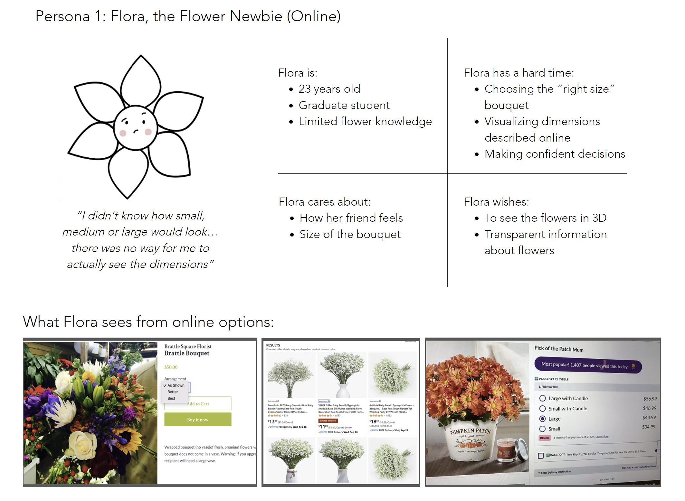
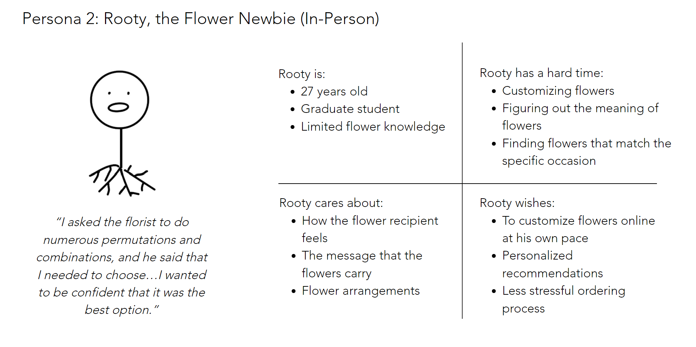
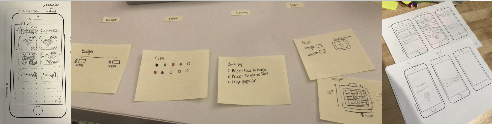

Flowerhouse
A digital solution that empowers users to make informed and confident decisions when purchasing flowers.
Project Overview
Flowerhouse is a mobile solution that empowers users to make informed and confident decisions when purchasing flowers. It was created as a part of the Human-Centered Design class in MIT's Integrated Design & Management department. Our goal was to identify a problem space and user group that we were unfamiliar with to explore pain points and unmet needs.
Problem
From interviews, we discovered that customers often had trouble with phone, online, and in person floral orders.
How might we optimize the flower-buying experience for customers new to flowers?
Unmet Needs
Assured that the selection was the best option.
An easy and efficient process for ordering flowers.
Convey a personal message through the flowers.
Solution: Flowerhouse

Human-Centered Design Process
We followed the Human-Centered Design Process from MIT IDM for an MVP by the end of the course.

User Research
We interviewed 10 different users from different ethnic backgrounds and age groups.
Our youngest user was a 20-year undergad while our oldest was a 90 year old funeral home owner. Through observational and informal structured interviews, we gathered data on the user’s flower-buying habits and behaviors, motivations, and struggles.
Raw Interview Notes

Interview summary
Florists- Shops have been in business for many years, so many technologies are outdated.
- Busy dealing with many customers.
- Prioritize in person customers over online/phone orders.
- High tolerance for pain points: unlikely to implement new technology.
Customers
- Found pain points with ordering online, over the phone, and in person, especially for novices.
- Lack of knowledge, consumes time and energy, unsure of arrangements, sees flowers as an investment
- Each customer has their own preferences and way of doing things.
- Customers want certain meanings to be conveyed through the flowers.
Research Analysis
We organized the notes from our interviews onto a Miro board across 5 different categories: Positives, Negatives, Preferences, Cares, Florists.

Key Quotes
Insights
These insights revealed that customers want customization, empowered decision-making, personalized options, and conveyed meanings in their flower purchases. Buying flowers isn’t simply a transactional process. Rather, there’s greater mental and emotional energy involved – and a lot of the pain points arise because of that. Understanding that was first and foremost to building empathy with the consumers in this unmet need.
We decided we wanted to help simplify the process and help customers make an informed pruchase.User Personas
 Initial Ideas
- Build a personal guide application for users.
- Provides information regarding flowers that are easy to digest.
- Pre-arranged flower options by occasions/purposes
- Gives users the opportunity to DIY flower arrangements at their own pace.
Paper Prototypes
User Testing Results
We had 10 users test out the paper prototypes.Users were confused about the purpose of the app. They were unsure if the app was a guide or a marketplace.
Users were confused about how to return to the previous screen or move around the app.
Rethinking the Design
We needed to reevaluate how we approached our app. We originally did not want to allow transactional purchases because we wanted to focus on the educational aspect of the app. However, the users seemed quite frustrated that they couldn't purchase the flowers they selected in the app. We decided to pivot our app to be a marketplace with educational components. We knew from our interviews with florists that older, more established shops did not want to implement new technology. After interviewing 3 freelance florists, we decided to target newer, smaller shops that were open to expanding their customer base and increasing efficiency.
Research-Led Design Choices
Customer Interviews: Provide a digital solution that educates users and allows for customization or pre-arranged options
Florist Interviews: Targets and onboards new florists who are open to increasing their customer base and efficiency
Usability Testing: Allow for transactions after users have built or selected their bouquet
Usability Testing: Added back, close, and home buttons on the screens correspondingly for a clearer interface
Final Design Flow
View Figma PrototypeSetup

DIY

Transaction

Pre-arranged

Transaction

Reflections
Originally, we wanted to pursue a solution targeted toward MIT students, but our mentors
encouraged us to go beyond the bubble and come up with a solution for an outside group with
which we had no prior experience or knowledge. I'm extremely grateful for this because it
forced me to step into the real world and dig deep into what the problem may be. I'm also
grateful for my teammates because we were able to effectively communicate and bring
different strengths to the table.
Before this experience, I would create a solution based on my own understanding of the problem.
Now I understand the importance of empathy and designing for the needs of other people.